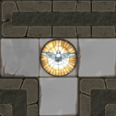
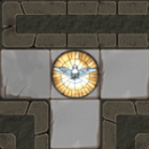

Vous êtes passé à la ligue supérieure!
Des Slashers peuvent apparaître pour vous achever. Vous pouvez maintenant YELL sur les autres explorateurs et vous réfugier dans des abris pour récupérer de la santé.
Les valeurs liées à l'isolation & aux wanderers sont maintenant variables.

 

Lisez les règles mises à jour pour plus de détails.